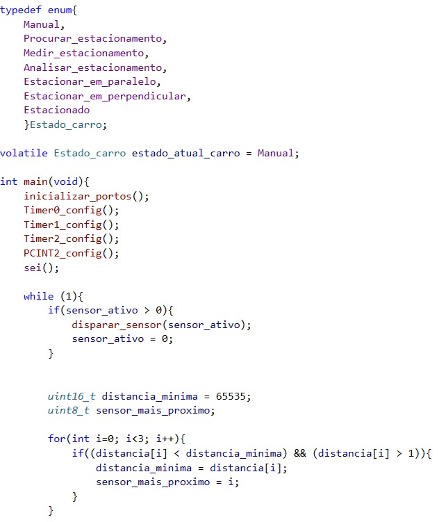

LABSI 2025/2026 - Autores: Jorge Coelho (1230866) e João Lobo (1231522)
Introdução
O presente projeto descreve a conversão de um veículo telecomandado (RC) comercial num protótipo robótico capaz de realizar manobras de estacionamento autónomo. O objetivo central foi reaproveitar a estrutura mecânica e os motores originais do brinquedo, integrando uma nova unidade de processamento baseada no microcontrolador ATmega328P. O desafio técnico consistiu em permitir que o veículo mantivesse a sua funcionalidade original de rádio-controlo, ao mesmo tempo que executa manobras autónomas precisas guiadas por sensores ultrassónicos.
Figura 1: Veículo telecomandado original antes das modificações.
Arquitetura do Sistema
A arquitetura do sitema foi concebida de forma híbrida para garantir versatilidade. Foi preservada a placa eletrónica original do veículo para manter o sistema de antena e comunicação com o comando de rádio. Esta placa trabalha em paralelo com o novo hardware desenvolvido. O fluxo de decisão é gerido pelo ATmega328: quando o modo manual está ativo, o utilizador controla a direção e tração via rádio; quando o modo de estacionamento é acionado, o microcontrolador assume o controlo exclusivo, processando as leituras dos sensores ultrassónicos para calcular a trajetória e comandar o driver de motores L298N.
Figura 2: Diagrama de blocos do fluxo de decisão entre modo manual e autónomo.
Hardware e PCB
A implementação física do hardware foi realizada utilizando uma breadboard fixada diretamente ao chassis do veículo comercial. Esta solução permitiu uma prototipagem rápida e a flexibilidade necessária para ajustar as ligações entre o ATmega328, o driver L298N e a placa original do carrinho durante os testes de estrada. Para elevar o projeto a um nível profissional, foi desenvolvido em paralelo o design de uma PCB (Printed Circuit Board) no software KiCad 9.0.6. O objetivo desta placa 3D é demonstrar como o circuito seria otimizado para produção, eliminando a ocupação excessiva de espaço e os riscos de mau contacto inerentes à breadboard.
Figura 3: Fase de prototipagem com breadboard integrada no chassis.
Design da PCB
No estudo de design da PCB, aplicaram-se regras de eletrónica de potência, como o uso de Net Classes de 0.8 mm para as linhas de alta corrente e um Plano de Massa (GND) para a proteção contra ruído eletromagnético. Esta abordagem permite visualizar a transição do protótipo funcional para um produto final robusto e miniaturizado.
Figura 4: Layout final das pistas (Camadas Superior e Inferior).
Software e Lógica de Controlo
O software foi desenvolvido em C++ com uma estrutura de Máquinas de Estados. O algoritmo de estacionamento monitoriza constantemente a distância lateral, traseira e dianteira através de sensores ultrassónicos. O controlo dos motores é realizado via PWM (Pulse Width Modulation), permitindo ajustes suaves na velocidade durante a manobra de aproximação. A lógica de software garante que o modo autónomo ignora os sinais do rádio-controlo durante a manobra, prevenindo conflitos de comandos.

Figura 5: Implementação da Máquina de Estados Finita (FSM) e configuração inicial do sistema.
Os testes práticos confirmam a eficácia do sistema híbrido desenvolvido. O veículo demonstrou uma transição estável entre o modo manual (comando de rádio original) e o modo autónomo. Através da monitorização por sensores ultrassónicos, o algoritmo foi capaz de identificar lugares de estacionamento e calcular a distância necessária para as manobras com uma margem de erro reduzida. A utilização do drivel L298N permitiu um controlo preciso da velocidade via PWM, garantindo que o carro não colidisse com obstáculos durante o processo. Embora o portótipo final utilize a montagem em breadboard para flexibilidade, a simulação e o design da PCB no KiCad validaram a viabilidade de uma futura miniaturização e industrialização do hardware.
Figura 6: Visualização 3D da placa eletrónica finalizada.
Vídeo 1: Demonstração do ciclo de estacionamento autónomo.
Conclusão
A realização deste projeto no âmbito de LABSI permitiu consolidar conhecimentos fundamentais em eletrónica, programção de microcontroladores e design de sistemas integrados. O maior desafio foi a adaptação de um chassis comercial de lazer, originalmente concebido para rádio-controlo, num sistema robótico inteligente. Esta integração exigiu uma compreensão profunda do fluxo de decisão entre a placa original do brinquedo e o novo sistema baseado no ATmega328. A conceção da placa 3D no KiCad, embora mantida como prova de conceito, foi essesncial para aplicar as regras de design profissional, como a gestão de ruído elétrico e o dimensionamento de pistas de potência. Em suma, o projeto atingiu os objetivos propostos, resultando num protótipo funcional que demonstra como a eletrónica personalizada pode expandir as capacidades de plataformas comerciais existentes.